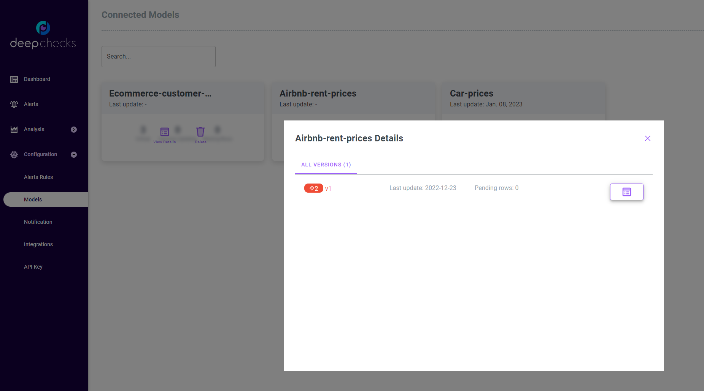

Sending Tabular Production Data#
This guide provides a deep dive into the process and reviews the different options for sending your production data to deepchecks. For a more streamlined guide that will quickly take you through the essentials of getting started with deepchecks for tabular data, from creating your model to easily sending production data, see the Tabular Quickstart. To read more about setting up your model and defining your reference data, see Setting Up a New Tabular Model. This guide assumes that you have already set up your model and model_version, and perhaps also uploaded reference data.
Anytime you’ll be working with deepchecks, you must first instantiate a
DeepchecksClient object. To do that, first generate a
personal API token using the application’s dashboard:

Then you should create the DeepchecksClient object:
>>> import os
>>> from deepchecks_client import DeepchecksClient
>>> host = os.environ.get('DEEPCHECKS_API_HOST') # Replace this with https://app.deepchecks.com
>>> # Make sure to put the API token in your environment variables. Or alternatively (less recommended):
>>> # os.environ['DEEPCHECKS_API_TOKEN'] = 'uncomment-this-line-and-insert-your-api-token-here'
>>> dc_client = DeepchecksClient(host=host, token=os.getenv('DEEPCHECKS_API_TOKEN'))
Once client is set up you’re ready to send your production data to deepchecks. This guide will walk you through the following steps:
Uploading Data#
In order to monitor your model, you must first upload your production data to deepchecks. The data being tracked by deepchecks includes your model’s predictions, the actual labels, and the features used to make the predictions. Each sample should have an accompanying unique identifier (ID) and a timestamp which represents the time the prediction was made.
Additionally, you may upload “additional data”, which are additional columns of data that are not used by the model. This data can be used to segment your data. For example, you may want to segment your data by the country of the customer, or by the type of device used. If this data is not used by the model, it can be uploaded as additional data.
Note
The data you upload must match the data schema used when creating the model version, which is a definition of the data columns and their roles. To learn more about defining your version schema, see the tabular setup guide.
- Data can be uploaded in two ways:
By batch - upload a batch of data at once. Useful for uploading historical data, or when uploading data from a whole day at once (useful when model predictions are also done in a batched manner).
By Sample - upload a single sample at a time. Useful for uploading data in real-time, when the deepchecks upload API is called for each sample, perhaps as part of a model’s prediction pipeline.
Sending Data in Order
Deepchecks requires that data sent within a single version be sent in order. This means that once a certain sample has been sent (either by batch or by sample), future data uploads must upload samples with a timestamp that is greater than or equal to the timestamp of the last sample uploaded.
Batch Upload#
To upload a batch of data, use the
DeepchecksModelVersionClient.log_batch()
method of your Model Version object. The method
has the following arguments:
sample_ids- A Sequence of unique identifiers for each sample. Each item in the sequence must be a single ID value, matching the corresponding sample in the data. This is a mandatory argument.timestamps- A Sequence of timestamps for each sample. Each item in the sequence must an int timestamp representing the second-based epoch time of the model’s prediction. If not provided, the current time will be used for all samples in the batch (not recommended).data- apandas.DataFramecontaining the data (features and additional data) to upload. The columns of the DataFrame must match the schema of the model version. Must be set to None explicitly if you are uploading predictions or labels only.predictions- A Sequence of predictions made by the model on the data. Each item in the sequence must be a single prediction value, matching the corresponding sample in the data. This is a mandatory argument.prediction_probas- A 2D numpy array of probabilities made by the model on the data. This is argument should be provided only for classification models, and is used to calculate metrics such as AUC that require probabilities. The array must have the same number of rows as the data, and the number of columns must match the number of classes.labels- A Sequence of labels for each sample. Each item in the sequence must be a single label value, matching the corresponding sample in the data. Labels are the only component of the production data that can be updated or provided later on (see the Updating Labels section below). To represent missing labels, use theNonevalue.samples_per_send- The number of samples to send in each request. This is useful when uploading large batches of data, to avoid sending too many samples in a single request. The default value is 10,000, and can be lowered if you encounter errors when uploading data with a large number of columns.
Each Sequence can be a pandas.Series, a numpy.ndarray, or a list of values.
In the following example, we upload a batch of data to the model version we have already created. In this case, the
whole batch is contained within a single DataFrame, with the dataframe index serving as the sample IDs, ‘datestamp’
serving as the timestamp, and the ‘price’ column serving as the label. Predictions were made by a model independently.
As this is a regression model, we do not provide the prediction_probas argument.
Sample Upload#
To upload a single sample, use the
DeepchecksModelVersionClient.log_sample()
method of the your Model Version object. The method
has the following arguments:
sample_id- A unique identifier for the sample. This is a mandatory argument.values- A dictionary of values to upload. The keys of the dictionary, which are the column names, must match the schema of the model version. The values are the sample values for each column. Must be set to None explicitly if you are uploading predictions or labels only.timestamp- An int timestamp representing the second-based epoch time of the model’s prediction. If not provided, the current time will be used (not recommended).prediction- The prediction made by the model on the sample. This is a mandatory argument.prediction_proba- A Sequence (of probabilities made by the model on the sample. This is argument should be provided only for classification models, and is used to calculate metrics such as AUC that require probabilities. The sequence must have the same number of entries as the number of classes.label- The label for the sample. Labels are the only component of the production data that can be updated or provided later on
In the following example, we upload a single sample to the a model version we have already created. In this case, the
sample is contained within a single dictionary, with the dictionary keys serving as the column names, and the values
serving as the sample values. Predictions where made by a model independently. As this is a regression model, we do
not provide the prediction_proba argument.
>>> model_version = dc_client.get_model_version('my_model', 'v1')
>>> model_version.log_sample(
... sample_id=sample_id,
... values=values_dict,
... timestamp=sample_timestamp,
... prediction=prediction,
... label=sample_label
... )
Validating Your Data has Arrived#
Once you have sent your data to Deepchecks you will typically see the results of the various monitors over time in the dashboard screen (if the model was defined with default or custom checks and monitors). However, you can also check the status of your data using the Models Screen. The Models Screen can be accessed from the system “Configuration” menu.
This screen shows a model cards for each model. Clicking the “View Details” button will expand the model card for the selected model, in which you can see both the date for the latest sample sent to the model, and the number of samples (rows) being processed (pending). Pending rows means that the data has been sent to Deepchecks, but has not yet been processed, so the data won’t show up in the dashboard and analysis screen yet.
{kind=link}
Updating Labels#
When building an ML system, it is common for the labels to arrive later than the predictions. In this case, you can
update the labels for a sample by calling the
DeepchecksModelVersionClient.update_sample()
method of the Model Version object.
The method is a simple one, receiving only the sample ID and the new label value. For example:
>>> model_version = dc_client.get_model_version('my_model', 'v1')
>>> model_version.update_sample('1', 378) # '1' is the sample ID, 378 is the new label value
Note that labels are the only component of the production data that can be updated or provided later on.
Handling Delayed Labels in Alerts#
Because labels can be updated after the original data and prediction where logged, Deepchecks will by default delay raising alerts on all monitors that depend on labels, such as model performance or label drift. This is done to better deal with use cases in which labels arrive gradually over time - we won’t want our alerts to be raised until we have enough data to make a meaningful performance estimation or label drift analysis.
An alert defined on a label-related check alert will be raised (given that the alert condition is met) in either of the following cases:
The delay time has passed (since the time at which the sample was been logged).
The ratio of non-missing labels within the relevant time window is greater than a given threshold.
Note
The delay is set to 3 days by default, and the threshold on the ratio of non-missing labels is set to 1.0. These two
parameters can be modifying when creating a model by passing the alerts_delay_seconds and
alerts_delay_labels_ratio arguments to the
DeepchecksClient.get_or_create_model() method.